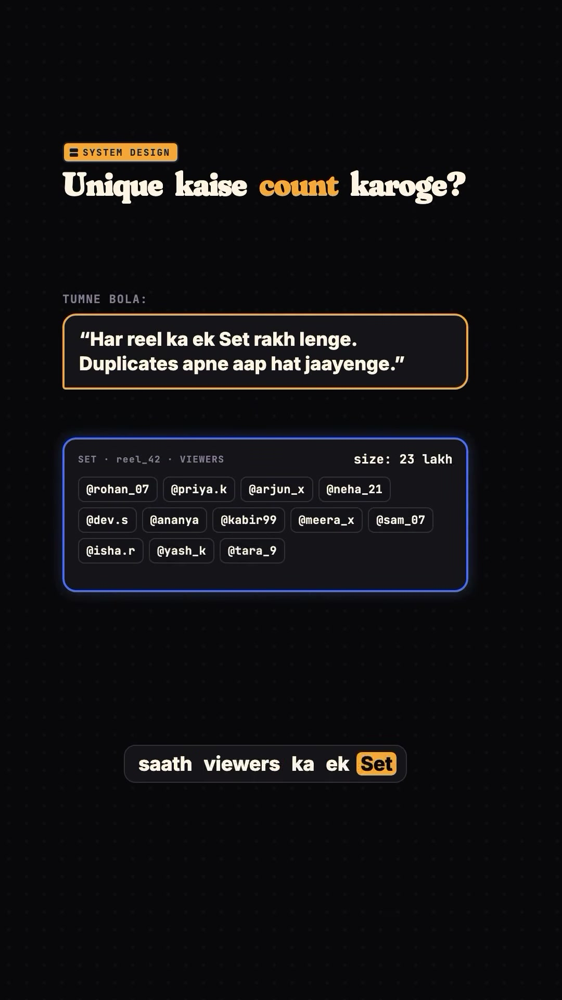
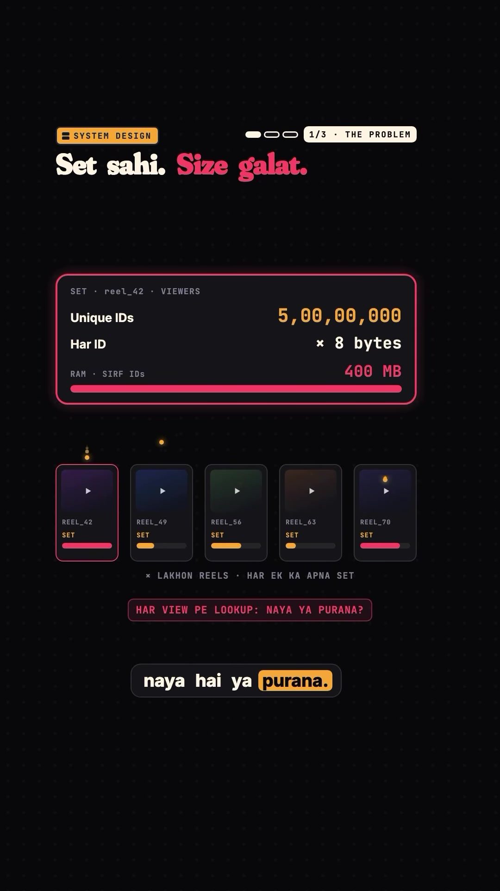
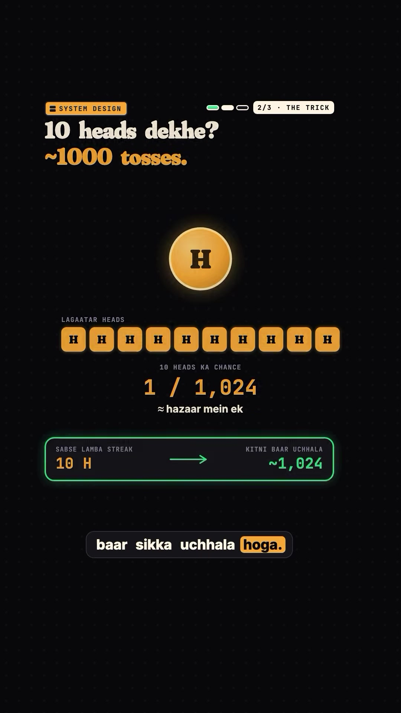
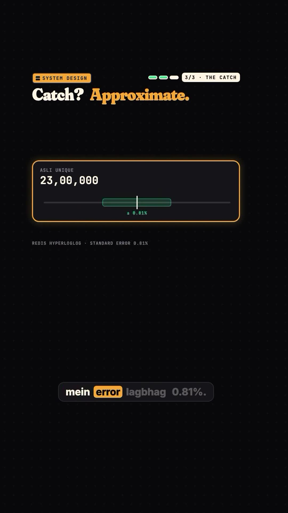
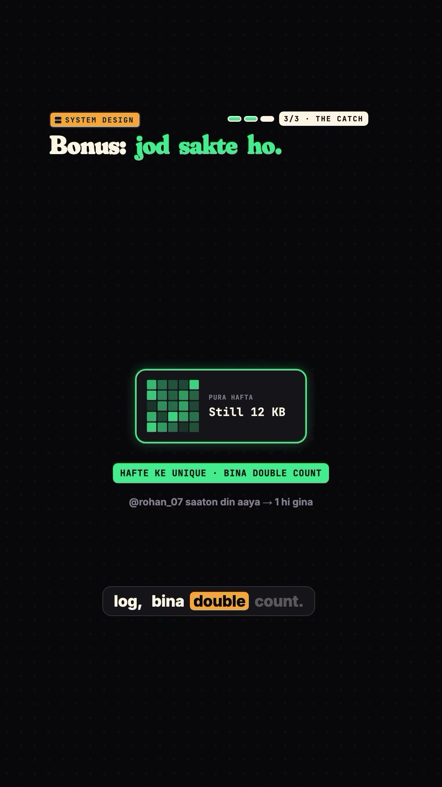
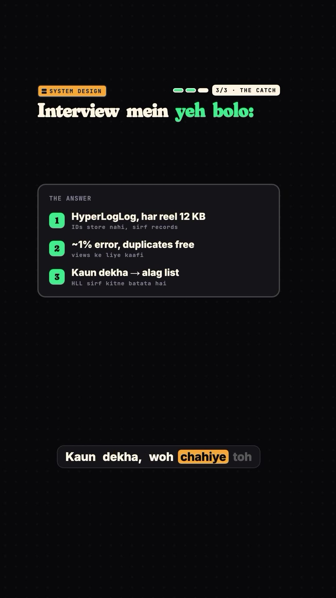

Executive Summary
A classic system design interview question asks: "How does Instagram or Reddit count distinct unique viewers on a viral post or reel?" If a single user re-watches a clip 10 times, the total play counter increments to 10, but the unique viewer count must strictly stay at 1.
Candidate engineers frequently answer: "Store a Redis Set or Hash Set containing user IDs per reel; sets automatically deduplicate." In production, this answer leads to instant interview rejection. A single viral video reaching 50 million unique accounts would require 400 Megabytes of RAM for just one reel ($50,000,000 \times 8\text{ bytes}$). Scaled across billions of uploaded media items, maintaining distinct sets would consume petabytes of in-memory caching.
The production industry solution is HyperLogLog (HLL). By trading a tiny fraction of accuracy (~0.81% standard error), HyperLogLog estimates cardinalities up to billions of unique elements using a fixed memory footprint of only 12 Kilobytes.
Core Visual Demonstrations






How HyperLogLog Works: The Intuition
1. The Coin Flip Analogy
Imagine flipping a fair coin until you see Tails.
- Seeing 1 Head before Tails (
HT) has probability $1/2^1 = 50\%$. You likely tossed the coin 2 times. - Seeing 5 consecutive Heads (
HHHHHT) has probability $1/2^5 = 1/32$. You likely tossed the coin ~32 times. - Seeing 10 consecutive Heads has probability $1/2^{10} = 1/1,024$. You likely tossed the coin ~1,000 times.
By observing the longest run of consecutive leading zeros in a uniform random stream, one can mathematically estimate the total number of distinct trials that generated that stream.
2. Hashing and Deduplication
When a user with ID user_849204 views a reel:
- Pass
user_849204through a uniform 64-bit hashing function (e.g. MurmurHash64A). - The output is a pseudo-random 64-bit binary sequence (e.g.
000000101101...). - Count the number of leading zeros before the first
1. In this case, 6 leading zeros. - If the same user views the reel again 10 minutes later, their hash is identical, the leading zero count is still 6, and the stored maximum never changes. Deduplication is completely automatic and requires zero knowledge of prior user IDs!
3. Stochastic Averaging via 16,384 Buckets
Relying on a single coin-flip observer has high statistical variance (a single lucky user could roll 20 zeros on the first try). To prevent outliers from distorting the estimate, HyperLogLog partitions the hash space:
- The first 14 bits of the 64-bit hash select one of $2^{14} = 16,384$ distinct registers (buckets).
- The remaining 50 bits determine the leading zero count for that bucket.
- Each bucket only needs to store numbers up to 50, which fits into 6 bits ($2^6 = 64$).
- $16,384 \text{ registers} \times 6 \text{ bits} = 98,304 \text{ bits} = 12,288 \text{ bytes} \approx \mathbf{12\text{ KB}}$.
- The final cardinality estimate calculates the harmonic mean across all 16,384 registers, reducing the standard error to:
Redis Production Commands
Redis includes native HyperLogLog commands prefixed with PF (named in honor of Philippe Flajolet, the algorithm's inventor):
# Record a user view (O(1) time complexity)
PFADD reel:views:DeYDUrQy user_101 user_102 user_103
# Query approximate unique count (O(1) time complexity)
PFCOUNT reel:views:DeYDUrQy
# Returns: 3
# Merging time-series counters without double-counting
PFADD reel:2026-10-25 user_A user_B
PFADD reel:2026-10-26 user_B user_C
PFMERGE reel:weekly_views reel:2026-10-25 reel:2026-10-26
PFCOUNT reel:weekly_views
# Returns: 3 (user_B is counted only once!)When NOT to Use HyperLogLog
- When you need to list actual user IDs: HLL only stores statistical bucket registers; you cannot query "Did Alice view this reel?" (use Bloom filters or inverted index sets for membership tests).
- When exact precision is legally required: Financial billing or audit ledgers cannot accept a ~1% margin of error.